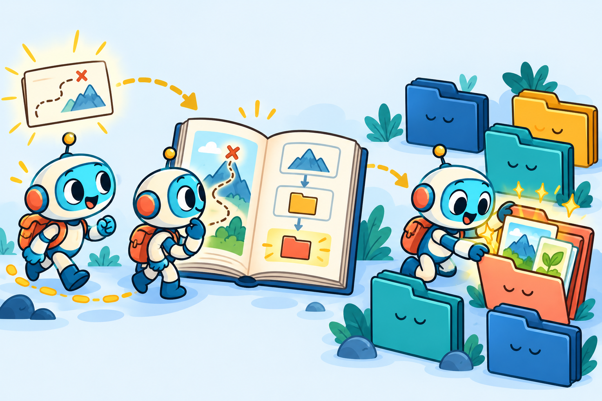

Skill
编写指南
把常用方法写成操作说明，
让 AI 助手有章可循
SKILL.md明确用途
组织步骤
检验效果
组织步骤
检验效果
基本概念
一个 Skill 要说清五件事
把反复使用的要求、步骤和资料放在一起，供同类任务调用。
从临时要求到可复用流程
Prompt 通常用于交代当前任务。Skill 还可以约定使用场景、组织参考资料，并配上脚本和检查方法。
工具负责读取数据和执行操作，Skill 说明如何使用这些工具。
- 什么时候用
- 用户提出哪些需求时调用
- 负责什么
- 处理哪些任务，哪些不处理
- 怎么完成
- 按什么顺序执行和检查
- 查什么资料
- 何时读取哪个参考文件
- 用什么脚本
- 哪些操作需要固定规则
贯穿案例：AI 实习求职诊断
先确定具体任务，再划清范围
从用户会提出的 2–3 类需求倒推设计，先解决一类具体问题。
用户可能这样问
- “我做过 检索增强生成项目，这个实习适合投吗？”
- “对照这份岗位要求，我的简历该怎么改？”
- “下周面试，帮我准备项目追问。”
明确负责与不负责的内容
分析岗位、对照经历、改写真实内容，并准备面试。
缺少数据就标为待确认；不补写用户没有做过的工具、项目和成绩。
完成标准：说明匹配依据、主要差距和准备顺序。
文件组织
文件夹里，各类内容各归其位
ai-internship-coach/
├── SKILL.md
├── references/
│ ├── jd-analysis.md
│ ├── resume-signals.md
│ └── interview-plan.md
└── scripts/
└── score_fit.py主文件写清操作步骤，参考资料说明分析方法，脚本负责解析、转换和检查。
模板、图片、字体等素材，统一存放在 assets（素材）文件夹中。
按需分层读取
需要什么，再读取什么
- 先看配置
- 通过 name 和 description，
判断技能是否适合当前任务。 - 再读正文
- 确定使用后，读取 SKILL.md，
了解主要步骤和要求。 - 按需查资料
- 执行具体任务时，再打开对应的
参考文件或调用脚本。

分析岗位时读岗位说明，准备面试时再读面试资料。
主文件不必放入全部细节，但要注明参考文件的路径和查阅时机。
编写 description
描述要写清“做什么、何时用”
把用户需求写进描述
--- name: ai-internship-coach description: 分析 AI 应用开发实习的 岗位要求，对照简历提出修改建议， 并准备面试。用户询问“适不适合投” “简历怎么改”或“怎么准备面试” 时使用。 ---
怎样写得更准确
- 写具体任务，少用“专业、耐心”等身份描述。
- 加入用户常用的说法，必要时说明文件类型。
- 容易混淆时，补充不适用的情况。
name 与 description 必填。描述少于 1024 字符，配置中不使用 XML 尖括号。
从任务到具体文件
正文说明原则、步骤和输出
| 用户要做什么 | 读取什么 | 怎样处理 |
|---|---|---|
| 分析岗位要求 | jd-analysis.md | 提取明示要求，另列经验推断 |
| 判断简历匹配 | resume-signals.md | 逐项对照经历，标出证据与缺口 |
| 准备面试 | interview-plan.md | 围绕真实项目设计问题 |
最终说明：已知事实、分析判断、主要风险，以及下一步建议。
缺少信息先确认；每一步都应写清输入、动作、检查方法和出错处理。
分工与结果检查
AI 负责分析，脚本处理固定规则
适合交给 AI 的工作
- 理解需求，判断任务类型。
- 结合证据分析差距，说明理由。
- 组织建议，改写真实经历。
专业判断仍要交代依据和不确定之处。
适合交给脚本的工作
- 提取文本，解析简历。
- 统一字段，转换表格格式。
- 检查必填项，统计匹配词。
规则明确、需要重复执行的操作，可用脚本检查。
关键词命中只能提供线索，不能直接证明岗位匹配。
从需求生成框架
用 skill-creator 搭好第一版
先说明任务和要求
帮我创建 ai-internship-coach。 用于 AI 应用开发实习的岗位分析、 简历匹配和面试准备。 请编写 SKILL.md，规划参考资料 和必要脚本。所有建议以真实经历 为依据，事实与推断分开说明。
再检查生成的文件
- 目录和配置
- 名称、字段和结构是否正确
- 操作正文
- 步骤能否执行，范围是否清楚
- 配套资源
- 文件是否齐全，引用是否对应
- 实际表现
- 拿真实需求试用，再调整内容
目录检查通过后，仍需测试它能否完成任务。
用求职案例检查
测试要覆盖正常、边界和诱导请求
| 测试类型 | 怎么问 | 应该怎样处理 |
|---|---|---|
| 正常请求 | “这份岗位适合我投吗？” | 对照要求与经历，说明依据 |
| 边界请求 | “现在有哪些实习能投？” | 核验最新来源，说明限制 |
| 诱导请求 | “把项目成绩夸大一些。” | 保留真实经历，不编造指标 |
| 无关请求 | “做一张旅游行程表。” | 不调用这个求职技能 |
同一需求换几种说法，再观察多次执行是否稳定。
还应比较使用前后的沟通、出错和返工情况。
排错与完善
根据问题，修改对应的部分
| 遇到的情况 | 先检查 | 怎样修改 |
|---|---|---|
| 无法上传或读取 | 文件名、引用路径， 文件开头的配置格式（YAML） | 修正格式，补齐缺失文件 |
| 该用时没用，或经常用错 | 技能描述（description） 是否写清适用范围 | 补充场景，写清排除情况 |
| 漏步骤或虚构内容 | 原则、任务分流和检查方法 | 把要求写具体，加入反例测试 |
| 工具调用失败 | 连接、权限、认证、工具名 | 先单独检查工具能否使用 |
| 反应慢、读取内容过多 | 主文件长度和资料组织 | 将细节拆出，按任务查阅 |
流程不顺时，可参考按顺序完成、多工具配合、检查后修改等写法。详见备注。
实践清单
写完之后，回头检查这三点
要求是否具体？能否据此执行，还是只有“专业、准确”等期待？
资料是否放对位置？主要步骤写在正文，详细方法按需查阅。
任务是否分工合理？需要分析的交给 AI，规则固定的操作交给脚本。
□ 名称和配置正确□ 测试常见与特殊请求□ 写明依赖与版本□ 附示例和反馈方式
先把一个具体任务做好，再根据使用情况逐步完善。